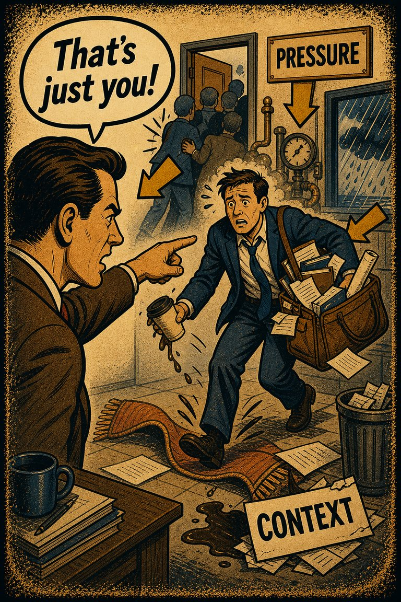
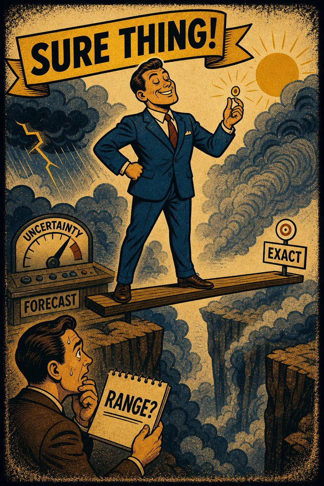
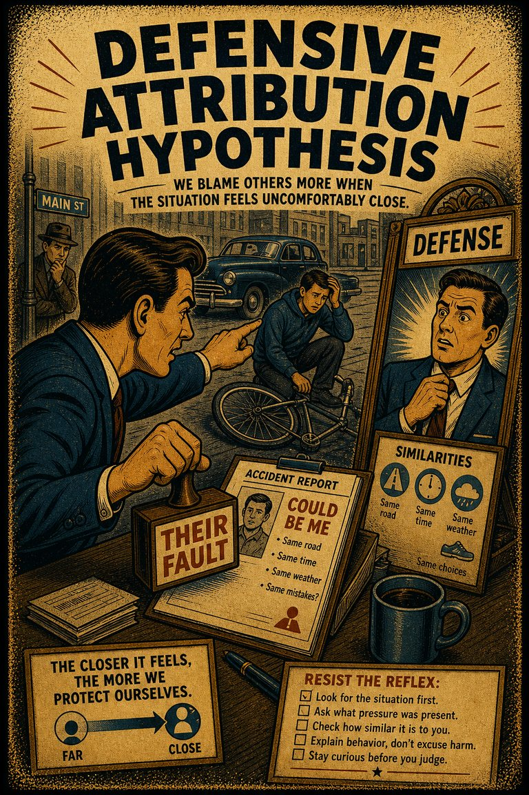

Common in self-evaluation
89
Strong anywhere competence, reputation, or moral standing are on the line.
Rare
Frequent
Cognitive Biases
A practical cognitive-bias site with clear definitions, learning paths, assessments, self-audits, and debiasing tools.
Cognitive Bias
The tendency to take disproportionate credit for successes while locating failures in bad luck, unfair circumstances, or other people.
What it distorts
It bends accountability, learning, blame, and retrospective explanation by making the self a special case in causal judgment.
Typical trigger
Performance reviews, conflicts, public wins and losses, identity-charged feedback, and any situation where responsibility carries ego cost.
First countermove
Compare the explanatory standard you are using for the success case with the one you are using for the failure case.
Coverage depth
Structured process
Would I tell the same story about this result if the roles or outcomes were reversed?
Protecting self-image changes the standard of explanation. Evidence that flatters the self gets read as diagnostic of character or skill, while evidence that threatens the self gets reframed as exceptional or externally caused.
These are classroom-facing editorial estimates for comparing how the bias behaves in use. They are teaching aids, not measured statistics.
Common in self-evaluation
89
Strong anywhere competence, reputation, or moral standing are on the line.
Easy to spot from outside
57
The asymmetry is often easier to hear when you compare stories across outcomes.
Easy to innocently commit
87
The explanatory split protects dignity and motivation, which makes it feel fair from inside.
Teaching difficulty
35
The pattern becomes vivid once opposite-outcome examples are paired.
This comparison makes the hidden pull easier to see before the technical label has to do all the work.
Biased move
This is like using one scoreboard when you win and a different rulebook when you lose.
Clearer comparison
The win may really involve skill and the loss may really involve bad luck sometimes, but a fair account cannot let outcome direction decide the explanatory standards by itself.
Do not use this label whenever people protect their self-image. The issue is more specific: success gets attributed inward and failure outward more than the full evidence warrants.
Use this label when good outcomes are explained mainly by ability, character, or wisdom while bad outcomes are explained mainly by luck, unfairness, or external obstacles under noticeably weaker scrutiny.
Use the quick check, caveat, and nearby confusions together. The fastest diagnosis is often the noisiest one.
Each example changes the surface context while keeping the same hidden distortion in place.
Someone treats a good result as proof of their judgment but treats a bad result as mainly the fault of timing, weather, or other people's behavior.
A manager credits strategic skill when a project succeeds but blames weak execution or impossible constraints when a similar project goes badly.
Political actors treat their own side's wins as earned and their losses as products of bias, sabotage, or unusual conditions.
Your interpretation feels fair because the flattering explanation seems more obvious and the threatening explanation seems to require more context.
Teaching note: This page is especially useful after projects, conflicts, and evaluations because it explains how people protect identity while still sounding causal and reasonable.
The strongest debiasing moves change the process, not just the label.
Write one explanation that credits your own role and one that critiques it, then ask which would feel more natural if another person were the subject.
Separate the lessons-learned discussion from the status discussion so owning mistakes does not immediately feel like self-demotion.
Use shared review rubrics that require the same questions after wins and losses instead of letting the outcome decide the explanatory standard.
Practice And Repair
Self-serving bias is a memory and explanation manager for ego costs. It does not need to deny reality entirely. It only needs to distribute credit and blame asymmetrically often enough to keep the self-story comfortable.
An outcome arrives that could either enhance or threaten the person's competence, status, or moral self-image.
Success naturally feels diagnostic of the self, while failure naturally feels more contextual, exceptional, or externally caused.
Credit and blame are sorted by self-protective convenience rather than by a stable explanatory standard.
Write the best internal and external explanations for both success and failure before deciding which factors really carried the most weight.
What explanation would I give here if the same outcome belonged to a peer I felt competitive with instead of to me?
Spot It
Slow It
Reframe It
These are nearby labels that can share the same outer appearance while differing in what actually drives the distortion. Use the overlap, the distinction, and the diagnostic question together before settling the call.
Why compare it: Fundamental attribution error overweights traits when judging other people; self-serving bias is the asymmetry that protects the self when responsibility is at stake.
Why compare it: Overconfidence exaggerates certainty before or during judgment; self-serving bias rewrites responsibility after the outcome threatens or flatters the self.
Why compare it: Ingroup bias extends extra charity to one's side broadly; self-serving bias is the narrower self-protective version centered on one's own outcomes.
These are useful when the label seems roughly right but the process change still feels underspecified.
Would I tell the same causal story if someone else had produced this outcome?
What part of the failure am I least motivated to own directly?
Where am I using different evidential standards for credit and blame?
These sourced cases do not prove what was in someone's head with perfect certainty. They are teaching cases for showing where the bias pressure becomes visible in practice.
Students attribute good grades inward and bad grades outward
People often explain strong performance by ability or effort while shifting poor performance toward luck, unfair tests, or outside conditions.
Why it fits: Outcome direction changes what kind of explanation suddenly feels most persuasive.
Wikipedia · Classic research
Athletes narrate wins and losses asymmetrically
Wins are often explained as proof of preparation, grit, or talent, while losses are more easily framed as officiating, weather, or unlucky breaks.
Why it fits: The explanatory burden shifts with ego value rather than staying stable across outcomes.
Wikipedia · Modern examples
Success and failure explained through different standards
Research on self-serving attribution shows a tendency to claim more internal credit for success while locating failure more heavily in external circumstances.
Why it fits: The explanatory standard changes in the direction that protects self-regard.
Psychological Bulletin · 1975
Use these sources to move from the teaching page into the underlying literature and seed reference material. The site is still written for clarity first, but the stronger pages should also be traceable.
A classic review source for asymmetric credit and blame patterns in causal attribution.
Seed taxonomy and broad coverage are drawn from Wikipedia's List of cognitive biases, then editorially reshaped into a teaching-first reference.
Once you know the bias, these nearby tools help you use the page in a real workflow rather than as a static definition.
Curated sequences where this bias commonly appears alongside a few predictable neighbors.
Short audits you can run before the distortion hardens into a decision, a verdict, or a post-hoc story.
Bias-aware AI prompts that widen the frame instead of simply endorsing the first preferred conclusion.
Printable lessons and workshop packets where this bias appears in context.
A mixed scenario set that can quietly pull this bias into the question bank without announcing the answer in the title first.
These links widen the frame around the bias without interrupting the core lesson on this page.
A theory essay on how people defend choices, identity, and coherence by editing memory, standards, and self-description rather than by simply declaring that they refuse to change.
CogBias theory
A theory article on how ego, ownership, and prior commitment change not just what people conclude, but how stubbornly they organize reasons around the conclusion.
CogBias theory
These neighbors were selected from shared categories, shared patterns, and explicit editorial links where available.

The tendency to explain other people's behavior too quickly in terms of character while underweighting situational pressures and constraints.

The tendency to be more certain about judgments, forecasts, or abilities than the evidence warrants.
The tendency to favor, trust, defend, or positively interpret people and claims associated with one's own group more readily than comparable outsiders.
The tendency to assume that people usually get what they deserve, which encourages reinterpretation of suffering, injustice, or bad luck as somehow earned.

A tendency to attribute more blame for a mishap to the person or persons involved if they are perceived as dissimilar to the person making that judgment
Recalling the past in a self-serving manner, e.g., remembering one's exam grades as being better than they were, or remembering a caught fish as bigger than it really was. Also the tendency to rely too heavily on one's own perspective and/or have a different perception of oneself relative to others